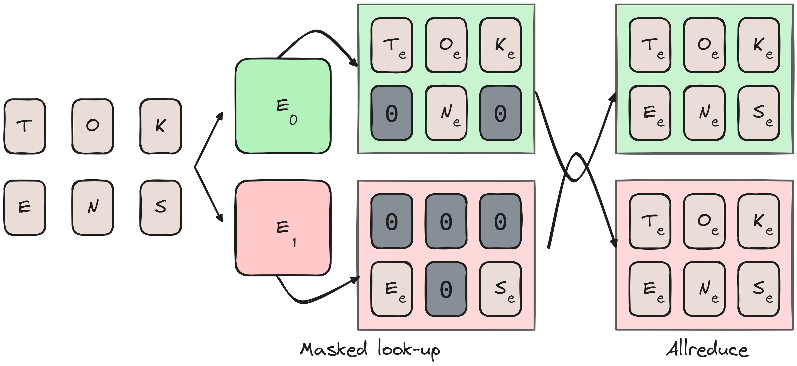
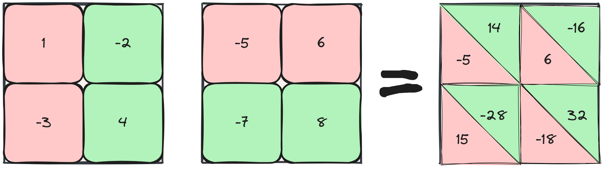

Tensor parallel, introduced in the Megatron-LM paper by NVidia as intra-layer model-parallelism, is a technique for sharding model parameters across devices to reduce memory costs. It’s typically used in training large models where a single layer cannot fit into a device by itself.
This post explores tensor parallelism, based on my experience implementing it in NuMPItron, a small library for distributed transformer training using NumPy and MPI1. There are several posts that discuss the basics of tensor parallelism—such as splitting linear layers on rows or columns and dividing attention heads—but I want to go in a bit more depth and discuss also the embedding table and the loss function.
1 NuMPItron. Since matmuls in CPUs are (very quickly) compute-bound, tensor parallelism will actually speed training up by quite a bit.
2 there are several frameworks supporting it. Megatron-LM is the OG. Since 2023, Microsoft DeepSpeed has support for tensor parallel models too and since 2024 Nanotron by Hugginface also supports tensor parallel training.
Tensor parallelism, like pipeline model parallelism (inter-layer), requires invasive code changes2 and is as slow as the slowest device communication. Hence, it is recommended to use tensor parallelism within a single node with high-speed communication like NVLink. Typically, \(N_\text{tp} = 8\), splitting the model weights over 8 devices, is the default for large runs.
Tensor Parallel Transformer
We begin with a batch of tokens BROADCAST to each device. For ease of understanding we have two devices: device 1 and device 2.
Input Embedding
The embedding layer takes a token index, locates the corresponding row in the embedding table, and returns that \(D_\text{model}\) dimensional row. In a tensor parallel model, the vocab dimension (rows) of \(N_\text{vocab}\) are divided into chunks across devices.
An issue arises when a device encounters a token index outside its chunk, which can be solved by masking. Each device returns a tensor of size (batch size, sequence length, \(D_\text{model}\)), filling out-of-bounds tokens for its chunk with zeros. Once each device completes this step, an ALLREDUCE operation ensures that masked indices are properly filled across all devices.
The figure below visualizes this process. If you’d rather see it implemented, refer to the NuMPItron codebase.

ALLREDUCE’d.Are there any alternatives to this? Why wouldn’t we slice the tensor on the \(D_\text{model}\) dim instead? I think this would be straightforward - each device would create a full batch size by sequence length by \(\frac{D_\text{model}}{N_\text{tp}}\) tensor. It wouldn’t require masking, but it would require an ALLGATHER, which has a worse worse complexity vs ALLREDUCE.
There are no reduction in the backward pass, but you will need to ensure that the correct indices in the embedding table are being updated by masking.
Attention
The attention layer transforms the inputs into Query, Key, and Value tensors with weights \(W_Q, W_K, W_V,\) each of shape \(D_\text{model} \times n_\text{heads} \times d_\text{head}\). Each head calculates the attention weights and the attention values separately, and projects it back to a shared representation with weight matrix \(W_O\) of shape \(d_\text{head} \times n_\text{heads} \times D_\text{model}\).
Because computation is done separately per head, tensor parallel distributes the heads over the devices. It’s depicted somewhat simplified below3:
3 Each token has several attention heads, this is still reflected in the attention weights but picture seq_len outputs.
ALLREDUCEd.This ensures that the softmax attention weights are valid. Each device will therefore have in total \(4 \times D_\text{model} \times \frac{N_\text{heads}}{2} \times d_\text{head}\) weights in memory (we assume no biases for the attention layer). An ALLREDUCE collects the output per device at the end of the forward pass and also at the end of the backward pass.
Grouped/Multi-Query Attention
Multi-query attention (MQA) is a modification to the transformer model where the key and value head size is reduced from \(N_\text{heads}\) to \(1\) to vastly reduce memory consumption when decoding. Grouped query attention (GQA) was introduced more recently as an interpolation between vanilla and multi-query attention to ensure quality does not degrade too much by the reduction in total parameters.
We have a bit of an issue when using MQA with \(N_\text{TP}=8\), since we can’t divide the single head to each device. A practical solution to this is to replicate the head to \(N_\text{TP}\) size effectively using the same head on each device. In general you will see that GQA is used more often and it is set to 8 specifically to serve 8 devices in parallel4.
4 Trainium devices have similar issue since they come in 32 per node, they also advise to replicate the heads: https://awsdocs-neuron.readthedocs-hostedlcom/en/latest/libraries/neuronx-distributed/api_guide.html#gqa-qkv-linear-module.
Feed Forward Network
The feed forward net is a simple two layer multi layer perceptron with a ReLU nonlinearity in the middle: \[ \large \text{FFN}_\text{MLP} = \max(xW_1 + b_1, 0)W_2 + b_2 \] This means we have two weight matrices including biases that we need to shard across devices in some way that makes mathematical sense.
Depicted below is a 2D matrix multiplication, something like \(xW\). We can shard computation along its columns (“column-parallel”) or along its rows (“row-parallel”).
If we do a column-parallel sharding strategy, we end up with complete sums but the results are sharded across devices, requiring an ALLGATHER operation.
Looking at the row-parallel strategy instead, we end up with partial sums across devices that require an ALLREDUCE.

Following the matrix multiplication with a ReLU or any nonlinearity, we can see that row-parallel will have some issues here, \(\text{ReLU}(-5) + \text{ReLU}(14) \neq \text{ReLU}(9)\). Performing a column-parallel strategy first ensures we can perform any nonlinearity since the values are complete already. We can follow it with a row-parallel matrix multiplication and ALLREDUCE the results for minimal communication overhead. An additional AllREDUCE is required at the end of the backward pass too.
For the bias terms, we need to ensure that the column-parallel multiplication adds the bias only on a single device, and for the row-parallel multiplication we can split the bias.
SwiGLU
Swish Gated Linear Units (SwiGLU) combine the Swish activation function5 with a Gated Linear Unit: a component-wise product of two linear layers. The result is that we have three weight matrices instead of two, and we omit any bias:
5 . \(\text{Swish}_\beta(x) = x \sigma (\beta x)\) where \(\sigma(x)\) is the sigmoid activation function.
\[ \large \text{FFN}_\text{SwiGLU} = (\text{Swish}_\beta(x W_1) \otimes xV) W_2 \]
Implementations tend to try and ensure that the SwiGLU does not lose any parameters when compared to the vanilla MLP6, but otherwise a tensor parallel strategy is pretty straightforward: \(W_1\) and \(V\) are column-parallel, and \(W_2\) is row-parallel. Therefore, it also has the same communication overhead.
6 See The Case for Co-Designing Model Architectures with Hardware. SwiGLU recommends \(\frac{8}{3}d_\text{head}\) instead of the MLPs \(4 \cdot D_\text{model}\), but this default is sub-optimal.
Un-Embedding and Loss Calculation
Since Megatron-LM assumes tied-embeddings, we un-embed with the same sharded matrix as we embed, which means the output logits will be split into \(N_\text{TP}\) chunks. There are no reductions for the un-embedding layer in the forward pass, but you will need to ALLREDUCE the gradients at the end of the backward pass.
Unlike other layers, which only required a smart initialization upfront (dividing head dimensions, rows, or columns by the number of devices) and some all-reduce operations afterward, the loss calculation is more complex. After un-embedding, each token has a set of logit predictions of \(N_\text{vocab}\) length.
Our goal is to compute the softmax cross-entropy loss function7:
7 global batch size = number of microbatches * microbatch size * \(N_\text{DP}\)
\[ \large \text{loss} = - \log (\text{logit}_\text{true label}) + \log(\sum \exp(\text{all logits})) \]
assuming the maximum value has already been subtracted for numerical stability. The first step is to calculate the max logit value per token per device using an ALLREDUCE. This is a relatively cheap operation requiring communication of only \(N_\text{batch} \times N_\text{ctx}\) values.
ALLREDUCE-max logit value for a stable loss calculation. The second is a masked ALLREDUCE such that each device has the labeled logit activation. The third and last ALLREDUCE ensures the log-sum-exp value is the same on all devices.Next, we communicate the logit of the true label to all devices. This is done by checking if the label index is within the current device’s chunk and masking it if it is not. An ALLREDUCE fills any masked locations, ensuring each device has the logit of the true label. The final communication step is the sum calculation: exponentiate the original logits per device, sum them, and perform the last ALLREDUCE of the day.
All in all, that’s a lot of reductions happening. Notably, however, is the fact that each of the reductions only communicates \(N_\text{batch} \times N_\text{ctx}\) values. I guess it wasn’t worth going into detail about it in the Megatron-LM paper.
There are ways to reduce computational overhead by calculating the softmax required for the backward pass (we essentially have everything ready after communicating the log-sum-exp values) and even looking into fused cross-entropy8, but that is basically it.
Communication Overhead
The table below gives us the forward and backward pass communications required across devices for the Megatron-LM style tensor parallel transformer.
| Layer | Forward Pass | Backward Pass |
|---|---|---|
| Input Embedding | \(N_\text{batch} \times N_\text{ctx} \times D_\text{model}\) | N/A |
| Attention | \(N_\text{batch} \times N_\text{ctx} \times D_\text{model}\) | \(N_\text{batch} \times N_\text{ctx} \times D_\text{model}\) |
| MLP | \(N_\text{batch} \times N_\text{ctx} \times D_\text{model}\) | \(N_\text{batch} \times N_\text{ctx} \times D_\text{model}\) |
| Output Embedding | N/A | \(N_\text{batch} \times N_\text{ctx} \times D_\text{model}\) |
| Cross-Entropy | \(3 \cdot N_\text{batch} \times N_\text{ctx}\) | N/A |
We need to keep in mind that the Attention and MLP layers are most important here, since these will happen at every layer. It does seem to scale quite bad in terms of sequence length, something I might cover in an upcoming post when I add sequence parallel to NuMPItron.
Activation Checkpointing
Hidden activations required for backward-pass calculations can quickly fill up device memory, and the larger the model size the faster memory fills up. To alleviate this somewhat, you can use activation checkpointing, which re-calculates the hidden activations during the backward pass by storing only the layer input instead.
This is a very useful technique to use, but when used naively it requires two additional ALLREDUCE operations when re-calculating the forward pass activations for the backward pass. The Megatron-LM authors fixed this in favor of a more selective recomputation in the sequence parallel paper9.
3D Parallel Training
In this section, we will explore a common training setup for large language models known as 3D parallel training, which combines tensor, pipeline, and data parallelism.
Let’s examine how Meta trained LLaMA-3-70B using this method. According to Meta’s blog post:
They used 15 trillion tokens. The model had a sequence length of 8192. Training was conducted on 16,000 GPUs. Full 3D parallelization was employed. Our objective is to determine the values for \(N_\text{TP}\) (tensor parallel device count), \(N_\text{PP}\) (pipeline parallel device count), and \(N_\text{DP}\) (data parallel device count).
Tensor parallelism should be performed on all devices within a node for fast intra-node reductions. Assuming NVIDIA GPUs, we have \(N_\text{TP}=8\). This leaves 2048 GPU groups to be divided for pipeline and data parallelism.
Pipeline and Data Parallel
Pipeline parallelism splits the layers into stages, forwarding data between them. A common issue with this approach is the potential for ‘bubbles’ of inactivity. To mitigate this, data is sent in ‘microbatches.’ For instance, if the batch size is 8 and the microbatch size is 4, two microbatches of size 4 are sent. Increasing the number of microbatches reduces the bubble but generally also decreases the microbatch size.
The number of pipeline stages determines the device spread, and the number of microbatches informs the global batch size10 needed for one forward and backward step. We want to know both! Unfortunately, Meta did not provide this information. We can, however, derive the data parallel value from reasonable default cases of pipeline parallel11.
10 global batch size = number of microbatches * microbatch size * \(N_\text{DP}\)
11 To reduce the search space, we will set some good baseline values: the microbatch size to 1 (low bubble), the number of microbatches are a ‘reasonable’ multiple of the number of pipeline layers.
| \(N_\text{PP}\) | \(N_\text{DP}\) | number of microbatches | Global batch size | Global batch size \(\times\) sequence length |
|---|---|---|---|---|
| 4 | 512 | 8 | 4096 | 33M |
| 4 | 512 | 12 | 6144 | 50M |
| 4 | 512 | 16 | 8192 | 67M |
| 8 | 256 | 12 | 3072 | 25M |
| 8 | 256 | 16 | 4096 | 33M |
| 8 | 256 | 20 | 5120 | 42M |
| 16 | 128 | 20 | 2560 | 21M |
| 16 | 128 | 24 | 3072 | 25M |
| 16 | 128 | 28 | 3584 | 30M |
As we see, with an increase of \(N_\text{TP}\) we decrease the global batch size potential. Some of these values look huge, but what can we compare it with:
- LLaMA-2-70B was trained on 2B global batch size in tokens
- Deepseek-67B was trained on 19.4M batch size in tokens
- OPT-175B was trained on 2M batch size in tokens
As an aside, pipeline parallelism is not required in combination with data and tensor parallel, OPT-175B was trained using only tensor-parallel and FSDP on 992 GPUs12.
12 From the log-book, we have \(N_\text{TP}=8\) on 992 GPUs, leaving 124 groups of 8 GPUs for data parallel training. We also have a local batch size of 8 for each group and a context length of 2048. Multiply 128 group by 8 local batch size by 2048 context length and we have 2031616, roughly 2M.
A Visual Example
It’s hard to visualize over 16K GPUs sharding a model, so let’s restrict ourselves to the following setup: \(N_\text{TP}=4\), \(N_\text{PP} = 2\) and \(n_\text{DP}=2\). That is, four nodes with 4 GPUs each with two pipeline stages and 2 data parallel stages. Intra-node tensor parallelism is fast, we can have a large number of microbatches to ensure communication between nodes does not bother us and data parallel is essentially the cheapest parallelization techniques in terms of overhead:

That wraps it up for this post. I hope this post helped you understand tensor parallel and perhaps even 3D parallel a bit better. Please let me know what you think, you can contact me on ùïè. The next post will either discuss pipeline parallel in more depth or distributed sampling strategies, after implementing it in NuMPItron ofcourse.